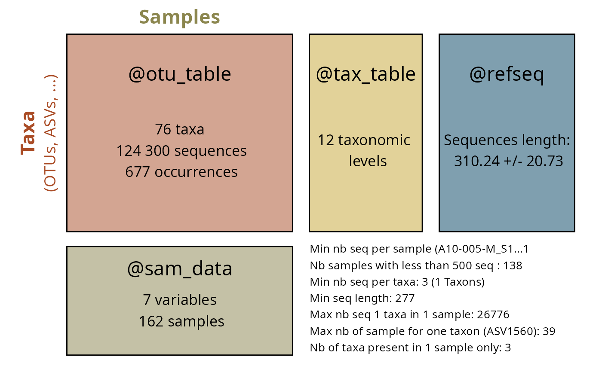

Select taxa in a phyloseq object based on names in a given column of the tax_table
Source:R/select_taxa_pq.R
select_taxa_pq.RdSelect taxa in a phyloseq object based on names in a given column of the tax_table
Usage
select_taxa_pq(
physeq,
taxnames = NULL,
taxonomic_rank = "currentCanonicalSimple",
verbose = TRUE,
clean_pq = FALSE,
...
)Arguments
- physeq
A phyloseq object
- taxnames
(optional) A character vector of taxonomic names.
- taxonomic_rank
(Character, default "currentCanonicalSimple") The column(s) present in the @tax_table slot of the phyloseq object. Can be a vector of two columns (e.g. c("Genus", "Species")).
- verbose
(logical, default TRUE) If TRUE, prompt some messages.
- clean_pq
(logical, default FALSE) If TRUE, clean the phyloseq object after subsetting (i.e. remove empty taxa and samples). If FALSE, only empty taxa are removed to take all samples.
- ...
Additional arguments to pass to [subset_taxa_pq()].
Examples
data_fungi_mini_cleanNames <- gna_verifier_pq(data_fungi_mini, data_sources = 210)
#> ✔ GNA verification summary:
#> • Total taxa in phyloseq: 45
#> • Taxa submitted for verification: 37
#> • Genus-level only taxa: 2
#> • Total matches found: 25
#> • Synonyms: 4 (including 4 at genus level)
#> • Accepted names: 21 (including 15 at genus level)
select_taxa_pq(data_fungi_mini_cleanNames,
taxonomic_rank = "currentCanonicalSimple",
taxnames = c("Xylodon flaviporus", "Basidiodendron eyrei"),
verbose = FALSE,
clean_pq = FALSE
)
#> phyloseq-class experiment-level object
#> otu_table() OTU Table: [ 2 taxa and 137 samples ]
#> sample_data() Sample Data: [ 137 samples by 7 sample variables ]
#> tax_table() Taxonomy Table: [ 2 taxa by 21 taxonomic ranks ]
#> refseq() DNAStringSet: [ 2 reference sequences ]
select_taxa_pq(data_fungi,
taxonomic_rank = c("Genus", "Species"),
taxnames = c("Xylodon flaviporus"), verbose = FALSE, clean_pq = FALSE
)
#> phyloseq-class experiment-level object
#> otu_table() OTU Table: [ 1 taxa and 185 samples ]
#> sample_data() Sample Data: [ 185 samples by 7 sample variables ]
#> tax_table() Taxonomy Table: [ 1 taxa by 12 taxonomic ranks ]
#> refseq() DNAStringSet: [ 1 reference sequences ]
select_taxa_pq(data_fungi, taxonomic_rank = "Trait", taxnames = c("Soft Rot")) |>
summary_plot_pq()
#> Warning: At least one of your sample contains less than 500 sequences.
#> Warning: At least one of your taxa is represent by less than 1 sequences.
#> Warning: At least one of your samples metadata columns contains NA.
#> Number of non-matching ASV 0
#> Number of matching ASV 1420
#> Number of filtered-out ASV 1344
#> Number of kept ASV 76
#> Number of kept samples 185
#> Cleaning suppress 0 taxa and 23 samples.
